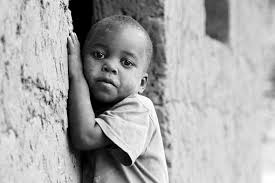

We Know and feel their pains because we have been there
Orhange World is a world that knowns the pain of Humanity, because they have been there before. It is a world of love
that care for the least, the rejected and the forgotten.
The helpless are out there suffering, some have
not even eaten for days while some are crying to God Almighty to send help to them.
At
Orhange World , we care for those that are suffering, the less privileged and we feel their pain because we have been
there before. We also give not because we have much but because we knowns what the Almighty
God said about Giving which is
"It is much better to give than to receive".
Humanity needs a community that we show hem love, that is why we at
Orhange World we have stand up for the sake of humanity, to help them in any way we can.
We have seen their pain, cry, plead and finally their time of lonliness and need. With God on Our side,
Humanity we
not suffer again. God helping us